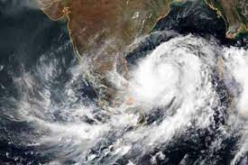

Tamil Nadu

Affected regions:
Tamilnadu
Recent disaster
Name : Nivar
Date : 23 November, 2020
Preparations : On 24 November, six National Disaster Response Force (NDRF) teams have been posted to
Cuddalore and two teams will be deployed in Chennai. Tamil Nadu government suspended bus services until further
orders in seven districts of Thiruvarur, Nagapattinam, Pudukkottai, Thanjavur, Viluppuram, Chengalpattu and
Cuddalore.The Tamil Nadu government declared a statewide holiday on 25 November. The Tamil Nadu state
government reported that more than 100,000 people were evacuated and were sheltered in 1000 relief
centers.
Damage: The estimates of Chennai civic officials reported that flood water entered around 40,000 homes
within the borders of the corporation. The Greater Chennai Corporation removed uprooted trees from 223
roads.The Chief Minister of Puducherry V. Narayanasamy reported that the initial loss in agriculture and other
sectors was estimated at ₹4 billion
Deaths: Five people were reported dead in Tamil Nadu.